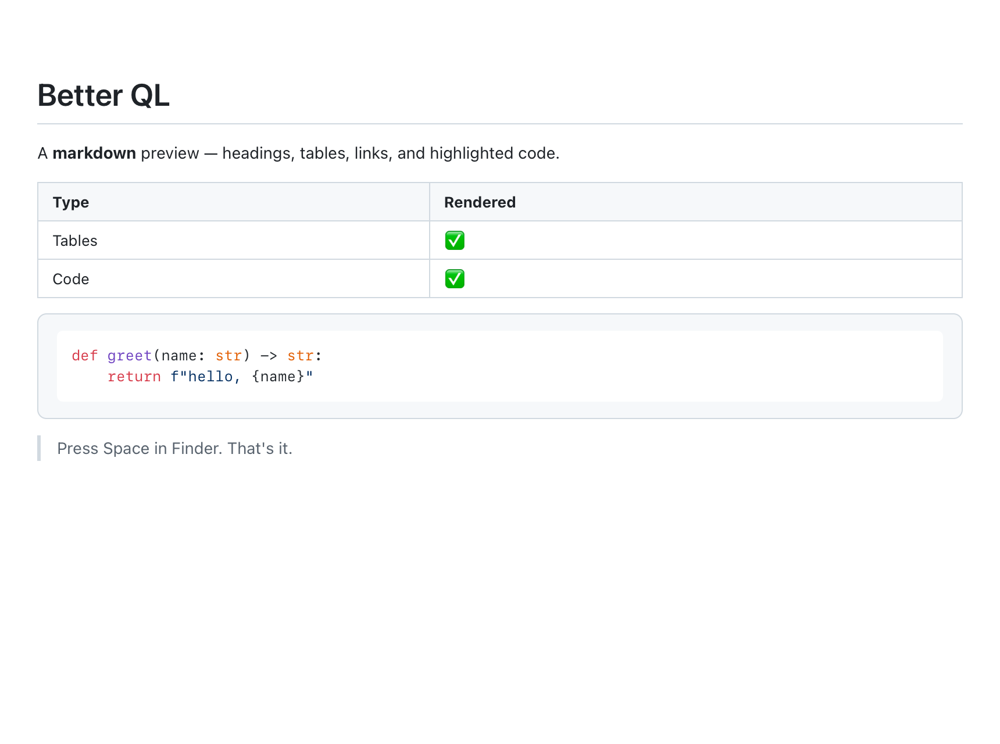
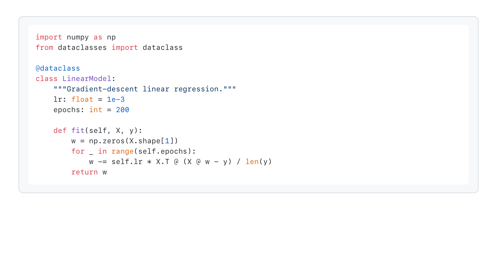
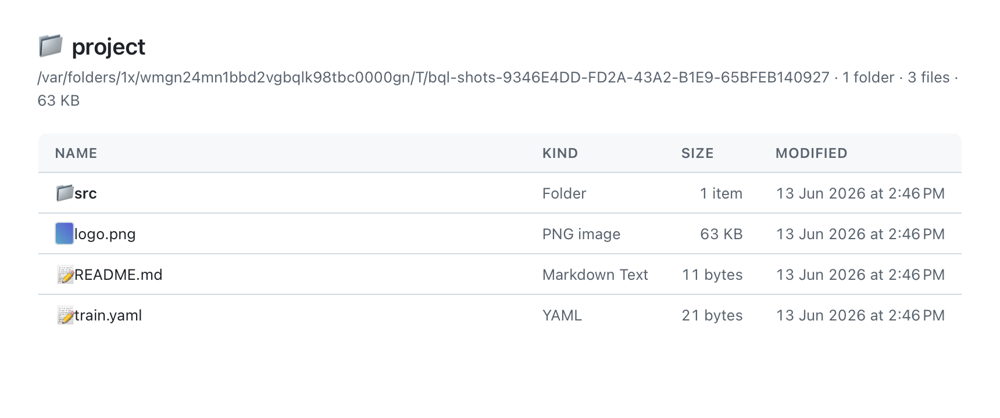
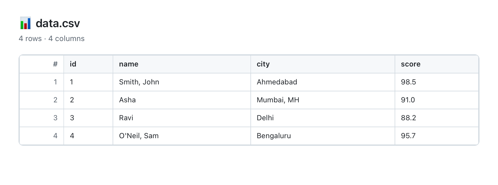
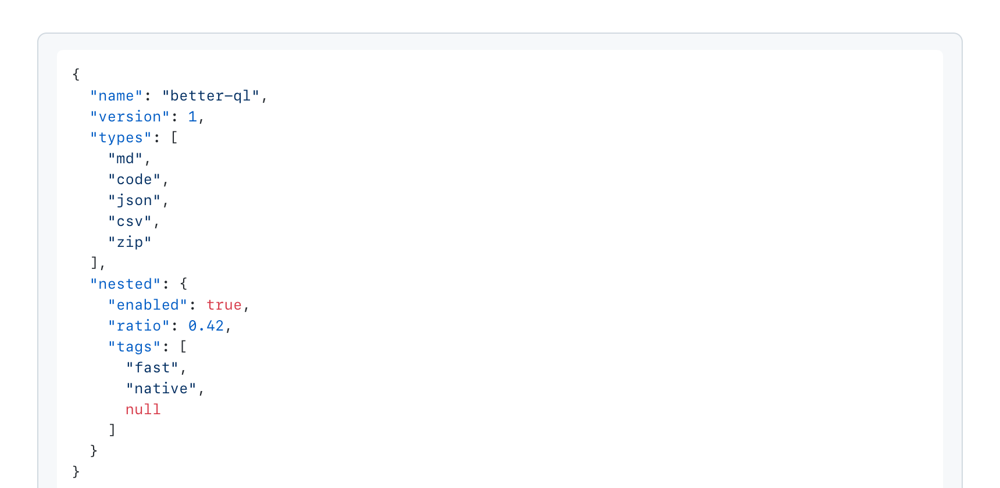
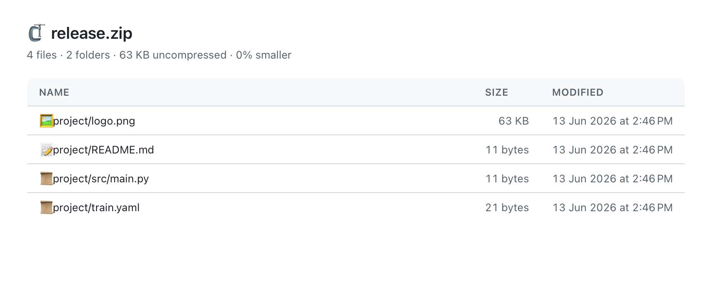

Press Space in Finder and actually preview the file.
Headings, tables, links, and syntax-highlighted code.
.py, .js, .ts, .swift, .c/.cpp, .go, .rs, .rb, .sh and more.
Pretty-printed (order preserved) and highlighted.
A real scrollable table with sticky headers.
Path, kind, size, dates — plus image thumbnails.
.zip, .tar, .tar.gz, .tgz, .gz — full file listing.
Follows macOS appearance; force light/dark via a script.






macOS 13+, Xcode, and XcodeGen
(brew install xcodegen). It builds with ad-hoc local signing — no Apple Developer account needed.
git clone https://github.com/nipunbatra/better-ql.git
cd better-ql
./install.shThen press Space in Finder on a .md, .json,
.csv, an archive, or a folder.
.html? macOS routes public.html to its own
previewers (Safari + QuickLook generation), which run ahead of third-party extensions and disable
JavaScript. Better QL deliberately leaves .html to the system.